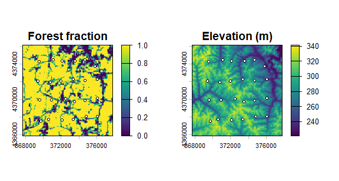
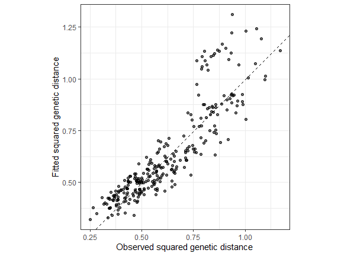
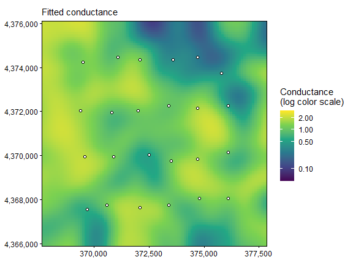
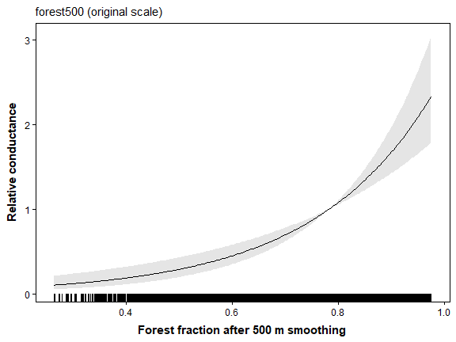
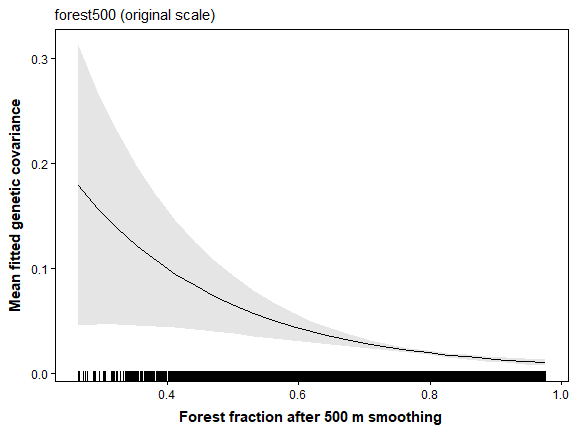
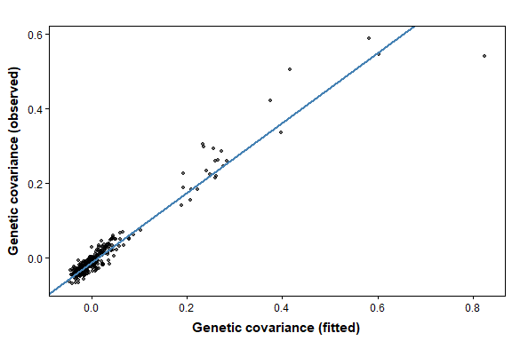
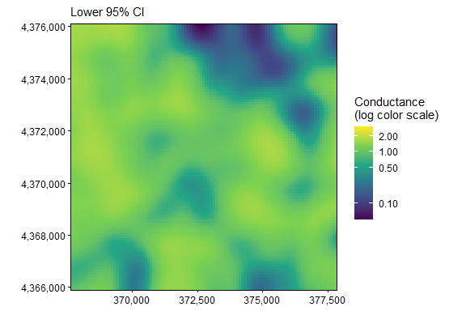
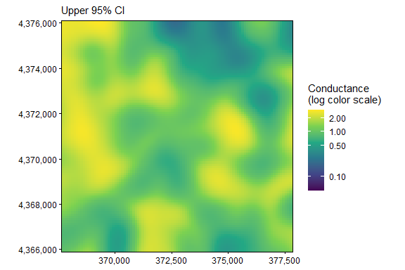

01. Getting Started with terradish
Bill Peterman
Source:vignettes/v01-getting-started.Rmd
v01-getting-started.RmdThe displayed results and figures in this guide were computed from
the executable R Markdown source shipped with the package. Routine
package checks use these precomputed results to keep the CRAN check time
modest. To rerun every code chunk, copy
system.file("vignette-source", "v01-getting-started.Rmd", package = "terradish")
to a writable directory and render that copy with
rmarkdown::render().
Goal. Follow one complete analysis from matched genotypes to a forest conductance map, using SNPs first and then microsatellites.
The data-generation guide
explains the landscapes, SLiM histories, sampling, and matched markers
used in these examples. Open it in R with
vignette("v12-data-generation", package = "terradish").
What will you learn?
terradish fits associations between landscape covariates
and genetic differences among sampled populations or individuals. Under
isolation by resistance (IBR), genetic patterns follow
a graph of connected raster cells, where higher cell conductance
strengthens connections between neighbors. The graph yields resistance
distances and covariance among sampling locations, and a measurement
model links those quantities to the observed genetic summary. Fitting
one parameterized conductance surface to the genetic data, rather than
regressing on separate resistance distances, follows Peterman and Pope
(2021). Hanks and Hooten (2013) give background on covariance models
built from a circuit graph, and Clarke, Rothery and Raybould (2002) on
the population-effects model for pairwise distances. Conductance is a
fitted model quantity, so claims about movement, habitat suitability, or
causal effects need evidence beyond the fitted surface.
Starting from raw simulated genotypes, this guide works through four steps:
- Align the raster grid, sampling locations, and genotype rows.
- Choose and construct the genetic response.
- Specify a landscape conductance function and a measurement likelihood.
- Fit, interpret, and check the model.
Choose your next question
After this guide, pick the question that matches yours. Each guide reloads the bundled data, so it runs in a fresh R session without SLiM or a landscape download.
| Your question | Guide | Response used |
|---|---|---|
| How broad is the relevant forest neighborhood? | vignette("v07-gaussian-scale-optimization", package = "terradish") |
Pond SNP covariance |
| Do slope and elevation add useful information? | vignette("v04-model-comparison", package = "terradish") |
Same pond SNP covariance |
| Does a curved association predict better? | vignette("v06-spline-conductance", package = "terradish") |
Same pond SNP covariance |
| Do differences between pond environments matter? | vignette("v08-ibe-ibr-workflow", package = "terradish") |
Pond SNP negative control, then a labeled covariance example |
| How do I interpret land-cover classes? | vignette("v05-categorical-conductance", package = "terradish") |
Labeled covariance example on the same landscape |
| How do individual genotypes reveal nonlinear resistance? | vignette("v09-individual-salamanders", package = "terradish") |
Terrestrial SNP IBR with matched microsatellite comparison |
| Which genetic response and information assumption should I use? | vignette("v02-wishart-covariance", package = "terradish") |
Matched pond SNPs and microsatellites |
| I have a pairwise genetic distance matrix (, ) | vignette("v03-mlpe-pairwise-distance", package = "terradish") |
Pairwise distance with MLPE |
Starting from a pairwise distance matrix? Fit
pairwise
,
(one minus the proportion of shared alleles), or individual genetic
distances with measurement_model = mlpe (maximum likelihood
population effects), which accounts for pairs that share a site. The
conductance formula, graph, and coefficient interpretation match this
guide, and only the measurement model and its nuisance parameters change
(see ?mlpe). vignette("v03-mlpe-pairwise-distance", package = "terradish")
works through that case.
Meet the forest-pond example
The example, motivated by a forest pond-breeding salamander, places 24 hypothetical ponds in native forest on public USGS elevation and 2023 land cover from southeastern Ohio. Each pond is one deme, or local breeding population. Routes between ponds cross different amounts of forest, so the question is whether forest along those routes helps explain genetic similarity among ponds.
Pond exchange was simulated from a forest conductance graph with a
500 m Gaussian context, so forest affects exchange by
construction, although the settings are not calibrated to a real
salamander population. Each pond retains 20 animals screened to exclude
known immediate relatives, and all 480 carry both 2,500 SNPs and 24
microsatellite loci from the same simulated ancestry. vignette("v12-data-generation", package = "terradish")
gives the full design.
Load and inspect the data
library(terradish)
library(terra)
data(ohio_ponds)
# Packed rasters store their values without a live external pointer.
raw <- terra::unwrap(ohio_ponds$covariates)
forest500 <- terra::unwrap(ohio_ponds$forest500)
ponds <- ohio_ponds$ponds
samples <- ohio_ponds$samples
data.frame(quantity = c("Ponds", "Raw captures", "Retained animals", "SNPs",
"Microsatellite loci"),
number = c(nrow(ponds), nrow(ohio_ponds$raw_samples), nrow(samples),
ncol(ohio_ponds$snp), ncol(ohio_ponds$microsat) / 2))
#> quantity number
#> 1 Ponds 24
#> 2 Raw captures 780
#> 3 Retained animals 480
#> 4 SNPs 2500
#> 5 Microsatellite loci 24
terra::res(raw)
#> [1] 100 100
table(samples$pond)
#>
#> P01 P02 P03 P04 P05 P06 P07 P08 P09 P10 P11 P12 P13 P14 P15 P16 P17 P18 P19 P20
#> 20 20 20 20 20 20 20 20 20 20 20 20 20 20 20 20 20 20 20 20
#> P21 P22 P23 P24
#> 20 20 20 20How to read the output. The genetic rows are
animals, but this guide models ponds, each with 20 diploids (40 sampled
allele copies). Cells are 100 m on a side, and the projected map (NAD83
/ UTM zone 17N, EPSG:26917) keeps distances in meters, which matters
when you interpret a smoothing distance. ?ohio_ponds
documents every field, including raw captures and pedigree metadata.
local({
old <- par(mfrow = c(1, 2), mar = c(3, 3, 2, 3))
on.exit(par(old))
terra::plot(raw[["forest"]], main = "Forest fraction")
points(ponds$x, ponds$y, pch = 21, bg = "white", cex = 0.7)
terra::plot(raw[["elevation"]], main = "Elevation (m)")
points(ponds$x, ponds$y, pch = 21, bg = "white", cex = 0.7)
})
How to read the map. Every pond is forested, yet travel between ponds is not equivalent, because the graph includes the intervening matrix and alternate routes. Removing matrix cells would impose barriers absent from the generating landscape. Elevation is kept for later comparisons but has no direct generating effect in this pond history.
Turn SNP dosage into a pond covariance
A SNP dosage is the number of copies of a chosen allele in a diploid animal (0, 1, or 2), not a genetic distance. Check the animal order, then sum dosage within ponds.
G <- ohio_ponds$snp
stopifnot(identical(rownames(G), samples$individual))
groups <- factor(samples$pond, levels = ponds$pond)
# Y has ponds in rows and SNP loci in columns; N counts sampled haploids.
Y <- rowsum(G, groups, reorder = FALSE)
Y <- Y[ponds$pond, , drop = FALSE] # declare pond order, regardless of capture order
N <- 2 * as.numeric(table(groups))
stopifnot(identical(rownames(Y), ponds$pond), all(N == N[1]))
# Equal sample sizes allow this common scale conversion to allele frequencies.
S <- cov_from_biallelic(Y, N) / N[1]
round(S[1:4, 1:4], 3)
#> P01 P02 P03 P04
#> P01 0.336 0.053 0.025 -0.015
#> P02 0.053 0.260 0.067 0.031
#> P03 0.025 0.067 0.156 0.031
#> P04 -0.015 0.031 0.031 0.293
c(maximum_absolute_row_sum = max(abs(rowSums(S))),
minimum_eigenvalue = min(eigen(S, symmetric = TRUE, only.values = TRUE)$values))
#> maximum_absolute_row_sum minimum_eigenvalue
#> 1.845746e-15 -6.015204e-17How to read the output. S is a 24 by 24
pond covariance. A positive entry means two ponds depart from the pooled
allele frequencies in the same direction, and a negative entry means
opposite directions. Row sums are zero up to rounding because the
covariance is centered. The smallest eigenvalue is zero up to rounding
rather than negative, so S is a valid covariance
matrix.
Optional: covariance formula and allele-frequency scaling
With equal sample sizes, the response is the average cross-product of standardized pond allele frequencies:
Here
indexes ponds,
indexes loci, and
is the number of retained loci. cov_from_biallelic()
standardizes allele counts, and dividing by the common
N[1] gives the frequency scale above. With unequal sample
sizes, inspect the constructor’s centering and sampling-variance
behavior instead of using this shortcut.
The standardization gives rare alleles more weight. The bundled panel keeps loci with pooled minor allele frequency of at least 0.05, spread along a linked 50 Mb chromosome.
# The covariance also defines a coherent squared-distance representation.
D <- dist_from_cov(S)
check_distance_response(D)
#> $admissible
#> [1] TRUE
#>
#> $min_eigenvalue
#> [1] -1.162121e-16
#>
#> $relative_min_eigenvalue
#> [1] -1.429493e-16
#>
#> $n_negative
#> [1] 0
#>
#> $tolerance
#> [1] 1e-07
#>
#> $eigenvalue_threshold
#> [1] 8.1296e-08
#>
#> $max_eigenvalue
#> [1] 0.81296
#>
#> $n_sites
#> [1] 24
round(D[1:4, 1:4], 3)
#> P01 P02 P03 P04
#> [1,] 0.000 0.490 0.442 0.658
#> [2,] 0.490 0.000 0.281 0.490
#> [3,] 0.442 0.281 0.000 0.386
#> [4,] 0.658 0.490 0.386 0.000How to read the output. D holds squared
genetic distances,
,
with a zero diagonal. The printed matrix keeps pond names on its columns
only, so rows [1,] to [4,] are ponds P01 to
P04 in the same order. It measures differences in standardized allele
frequencies, not
or meters. check_distance_response() reports
admissible = TRUE because D comes from a valid
covariance, so generalized_wishart could fit it. Distances
computed other ways, such as
,
often fail this check, so fit those with mlpe.
The objects follow the sampling hierarchy:
| Object | Rows or spatial unit | Meaning |
|---|---|---|
G |
480 animals | Alternate-allele dosage at each SNP |
Y |
24 ponds | Allele counts summed within each deme |
S |
24 by 24 ponds | Genetic covariance fitted by the measurement model |
surface |
Connected landscape cells, with 24 focal ponds | Routes through the landscape |
fit_forest |
One fitted model | Conductance association and response parameters |
Keep these units separate. More markers improve genetic measurement, while more ponds change the spatial sampling design.
Build the conductance graph
Start with the fixed forest500 context that generated
exchange, so the first model has a single landscape coefficient. The
Gaussian-scale guide estimates that scale from the raw forest layer.
fixed <- c(raw, forest500)
# Standardize continuous layers over the full graph domain, not only pond cells.
scaled <- scale_covariates(fixed)
# scale_covariates() records each layer's center and scale. saveStack = TRUE
# (the default) keeps that record with the graph, so plots can label axes in
# original units.
surface <- conductance_surface(scaled, ponds[c("x", "y")],
directions = 8, saveStack = TRUE)Eight directions connect each cell to its cardinal and diagonal neighbors. Keep the same grid, edge rule, and domain for every model you compare, and in a new study check that results hold under reasonable changes in domain margins and raster resolution.
The fixed-context conductance is
where is the standardized, smoothed forest fraction. The coefficient therefore describes one standard deviation (SD) of forest context over this landscape, which is 0.132 in forest fraction. There is no conductance intercept, because multiplying every cell’s conductance by the same constant does not change the fit.
Fit forest and uniform-conductance models
Fit both models to the same response, graph, and likelihood. The
Wishart likelihood also needs nu, the effective
Wishart information you assume S contains. You
must supply it, and it is not a count of independent markers, because
linked SNPs share history. This guide uses nu = 40 as a
working value (it matches N only by coincidence). The graph
also carries layers that the formula does not use, so
terradish() warns that it removed them. That warning is
expected, and this guide does not print it. Hold nu fixed
across compared models and report how results change over a plausible
range.
control <- NewtonRaphsonControl(maxit = 200, ctol = 1e-8, ftol = 1e-8)
fit_uniform <- terradish(S ~ 1, surface,
measurement_model = wishart_covariance, nu = 40,
optimizer = "bfgs", control = control)
fit_forest <- terradish(S ~ forest500, surface,
measurement_model = wishart_covariance, nu = 40,
optimizer = "bfgs", control = control)
summary(fit_forest)
#> Conductance surface with 10404 vertices (24 focal) estimated by maximum likelihood
#> Call: terradish(formula = S ~ forest500, data = surface, measurement_model = wishart_covariance,
#> nu = 40, optimizer = "bfgs", control = control)
#>
#> Loglikelihood: 141.3124 (3 degrees freedom)
#> AIC: -276.6249
#>
#> Number of function calls: 13
#> Number of optimization steps: 6
#> Convergence: converged | projected gradient: 1.7e-12
#> Norm of gradient at MLE: 1.703684e-12
#>
#> Nuisance parameters (conditional on fitted conductance surface; measurement-model scale):
#> Estimate Std. Error Lower 95% Upper 95%
#> tau 1.5090 0.1928 1.1311 1.8870
#> sigma -3.4186 0.7604 -4.9090 -1.9281
#>
#> Coefficients:
#> Estimate Std. Error z value Pr(>|z|)
#> forest500 0.58003 0.09377 6.185 6.19e-10 ***
#> ---
#> Signif. codes: 0 '***' 0.001 '**' 0.01 '*' 0.05 '.' 0.1 ' ' 1How to read the summary. First check the
Convergence: line. In the Coefficients table,
forest500 is on the log-conductance scale, and its positive
estimate means more forest context goes with higher conductance. The
standard error, z value, and p-value all scale with the assumed
nu, so read them as conditional on nu = 40.
The sensitivity check below shows how they change. The uniform model
(conductance one everywhere) is the graph version of isolation by
distance (IBD), where genetic differences grow with separation but no
cell is easier to cross than another.
The Nuisance parameters block holds measurement-model
parameters the fit needs but that are not of direct interest. The fitted
covariance is
,
where
is the graph covariance and
is the identity matrix. Because the likelihood compares ponds with one
another, adding a constant to every entry of S does not
change the fit.
| Parameter | Where it appears | What it measures |
|---|---|---|
forest500 (theta) |
coef(fit_forest) |
Change in log conductance per one SD of forest context |
tau |
summary(fit_forest)$phi |
Weight of the graph covariance in the fitted covariance |
sigma |
summary(fit_forest)$phi, log scale |
Log of the extra variance added to each pond (the nugget); not a smoothing distance |
nu |
Supplied by you | Effective Wishart information assumed for S, held fixed
across compared models |
theta_forest <- coef(fit_forest)[["forest500"]]
c(conductance_ratio_per_SD = exp(theta_forest),
percent_change_per_SD = 100 * (exp(theta_forest) - 1),
nugget_variance = exp(summary(fit_forest)$phi[["sigma"]]))
#> conductance_ratio_per_SD percent_change_per_SD nugget_variance
#> 1.78608717 78.60871721 0.03275952
exp(confint(fit_forest)) # 95% interval for the conductance ratio
#> 2.5 % 97.5 %
#> forest500 1.486221 2.146456How to read these values. Exponentiating the
coefficient gives a conductance ratio. Each one-SD increase in smoothed
forest (0.13 in forest fraction) multiplies conductance by about 1.79, a
79% increase, with a 95% interval of 1.49 to 2.15. The nugget variance
is in the units of S. It absorbs sampling variation and
model mismatch and does not measure drift or population size.
# Lower assumed information widens uncertainty without changing the coefficients.
less_information <- terradish_rescale_nu(fit_forest, nu = 20)
rbind(nu40 = sqrt(diag(vcov(fit_forest))),
nu20 = sqrt(diag(vcov(less_information))))
#> forest500
#> nu40 0.09377258
#> nu20 0.13261445How to read the output. Halving nu
multiplies each standard error by
but leaves the estimate unchanged. If the interval still excludes zero
at the smallest plausible nu, the conclusion does not hinge
on that assumption. The check does not estimate the true effective
information.
Check convergence, comparison, and adequacy
aic_table(list(fit_uniform, fit_forest), mod_names = c("uniform", "forest500"))
#> model K AIC Delta_AIC AIC_wt Cum.wt loglik converged boundary
#> 2 forest500 3 -276.6249 0.0000 1 1 141.3124 TRUE FALSE
#> 1 uniform 2 -203.5238 73.1011 0 1 103.7619 TRUE FALSEHow to read the output. Check converged
first. It is TRUE only when both the conductance optimizer
(fit$convergence$code) and the final nuisance optimization
(fit$fit$subproblem$convergence) returned code 0, and
boundary flags an estimate stuck at a limit. Lower AIC is
better, Delta_AIC is each model’s distance from the best,
and AIC_wt is its relative support within this set. Models
within 2 AIC units of the best have comparable support. The forest model
is 73.1 AIC units better than uniform conductance. AIC depends on
nu, and fits to different marker panels or likelihood
families cannot share one table.
library(ggplot2)
# Include the measurement nugget by converting fitted response covariance.
predicted_D <- dist_from_cov(fitted(fit_forest))
pond_pairs <- lower.tri(D) # one entry per pair of ponds
diagnostic <- data.frame(observed = D[pond_pairs], fitted = predicted_D[pond_pairs])
ggplot(diagnostic, aes(observed, fitted)) +
geom_point(alpha = 0.6, size = 1.5) +
geom_abline(slope = 1, intercept = 0, linetype = 2) +
coord_equal() + theme_bw() +
labs(x = "Observed squared genetic distance", y = "Fitted squared genetic distance")
How to read the plot. Points near the dashed line are pond pairs the model predicts well, and the spread shows variation it does not capture. If a group of points sits off the line together, color them by pond to see whether one pond drives the misfit. Pairs share ponds, so the points are not independent, and a regression through them is not a new test.
C <- conductance(surface, fit_forest)
maps <- plot(fit_forest, type = "surface", data = surface)
# Use the same limits here and in the three uncertainty panels below.
map_limits <- range(terra::values(C), na.rm = TRUE)
map_colors <- scale_fill_viridis_c(
trans = "log10", limits = map_limits,
breaks = c(0.01, 0.1, 0.5, 1, 2, 5, 10, 20),
name = "Conductance\n(log color scale)"
)
maps[[1]] + map_colors +
geom_point(data = ponds, aes(x = x, y = y), inherit.aes = FALSE,
shape = 21, fill = "white", size = 1.5)
How to read the map. Yellow cells have high fitted conductance and dark purple cells low conductance, across the whole landscape, not only near ponds. On the logarithmic scale, equal color steps are equal ratios, so 0.5 to 1 is the same step as 1 to 2. Values are relative to an average cell, not probabilities of movement or survival. Shared limits let you compare this map directly with the interval maps below.
Follow forest from conductance to the genetic response
The conductance curve shows the forest relationship fitted to raster cells. The genetic-response curve passes that relationship through the graph and measurement model.
plot(fit_forest, type = "marginal", data = surface,
marginal_covariates = "forest500") +
labs(x = "Forest fraction after 500 m smoothing", y = "Relative conductance")
How to read the curve. Conductance rises with forest
and equals 1 at the landscape-average forest value, so the curve shows
conductance relative to an average cell. The horizontal axis is
back-transformed to forest fraction because
scale_covariates() recorded the scaling and the graph kept
that record (saveStack = TRUE, the default). The rug marks
landscape forest values, and the band reflects coefficient uncertainty
under nu = 40.
# Each point requires a graph solve; 25 points keep this demonstration manageable.
plot(fit_forest, type = "marginal_response", data = surface,
marginal_covariates = "forest500", n = 25) +
labs(x = "Forest fraction after 500 m smoothing",
y = "Mean fitted genetic covariance")
How to read the genetic-response curve. At each
forest value, type = "marginal_response" sets forest to
that value in every cell, recalculates the fitted covariance among
ponds, and averages it. More conductance shrinks the graph’s
contribution to genetic covariance, so the curve falls as forest rises.
With forest as the only predictor, one forest value makes conductance
uniform, so this curve is the conductance curve inverted and rescaled.
It is more informative in models where other predictors still vary
across the landscape. The band is an approximate interval for the
average, not for any one pond pair. ?plot.terradish
describes each plot type.
The package also draws the observed-versus-fitted check and interval maps:
plot(fit_forest, type = "fit")
How to read the plot. This covariance-scale version
of the distance plot separates pond variances (the diagonal of
S) from between-pond covariances, so judge agreement within
each cluster. Fitted values are on the horizontal axis, and the blue
line is a least-squares fit of observed on fitted values, not the 1:1
line.
for (p in maps[-1]) print(p + map_colors)

How to read the maps. The bounds share the estimate’s spatial pattern because they come from the same forest coefficient. Conductance is least certain where the bounds differ most, in cells whose forest context lies farthest from the landscape average.
Construct the matched microsatellite response
Microsatellite repeat counts are allele labels, not dosages. The constructor turns the two allele columns per locus into standardized allele-indicator features and a grouped covariance with a coherent Gower diagonal.
stopifnot(identical(rownames(ohio_ponds$microsat), samples$individual))
S_ms <- cov_from_genetic_data(ohio_ponds$microsat, groups = groups,
input = "allele_calls", loci = ohio_ponds$microsat_loci,
diagonal = "gower", normalize = "features")
fit_ms <- terradish(S_ms ~ forest500, surface,
measurement_model = wishart_covariance, nu = 40,
optimizer = "bfgs", control = control)
data.frame(marker = c("2500 SNPs", "24 microsatellite loci"),
forest_coefficient = c(coef(fit_forest)[["forest500"]],
coef(fit_ms)[["forest500"]]),
conductance_ratio = exp(c(coef(fit_forest)[["forest500"]],
coef(fit_ms)[["forest500"]])))
#> marker forest_coefficient conductance_ratio
#> 1 2500 SNPs 0.5800273 1.786087
#> 2 24 microsatellite loci 0.4887609 1.630295How to read the output. Both panels come from the
same animals and history, and both estimate a positive forest effect.
Compare the coefficients, but do not rank the fits by AIC or
log-likelihood, because different responses give incomparable
likelihoods. The microsatellite fit reuses nu = 40 only so
the call matches the SNP fit. Point estimates do not depend on
nu, which is why this table compares coefficients and
reports no standard errors. Effective Wishart information is a property
of each response, so choose and justify nu separately for
every marker panel before you report uncertainty; 24 loci are unlikely
to support the value you would defend for 2,500 SNPs. Nor are the two
panels independent replicates. diagonal = "gower" puts each
pond’s variance on the scale of the between-pond covariances, as the
Wishart likelihood requires, whereas the "within" diagonal
is on a different scale and is unsuitable here.
Quick reference: a complete fixed-context SNP workflow
library(terradish)
library(terra)
library(ggplot2)
data(ohio_ponds)
# 1. Align individuals and ponds, then summarize equal-size allele counts.
g <- factor(ohio_ponds$samples$pond, levels = ohio_ponds$ponds$pond)
Y <- rowsum(ohio_ponds$snp, g, reorder = FALSE)
Y <- Y[ohio_ponds$ponds$pond, , drop = FALSE]
N <- 2 * as.numeric(table(g))
stopifnot(all(N == N[1]))
S <- cov_from_biallelic(Y, N) / N[1]
# 2. Retain the full projected landscape, including the matrix between ponds.
x <- c(unwrap(ohio_ponds$covariates), unwrap(ohio_ponds$forest500))
graph <- conductance_surface(scale_covariates(x), ohio_ponds$ponds[c("x", "y")],
directions = 8, saveStack = TRUE)
# 3. Fit uniform and forest models; nu is an assumption, not the SNP count.
control <- NewtonRaphsonControl(maxit = 200, ctol = 1e-8, ftol = 1e-8)
fit0 <- terradish(S ~ 1, graph, measurement_model = wishart_covariance,
nu = 40, optimizer = "bfgs", control = control)
fit <- terradish(S ~ forest500, graph, measurement_model = wishart_covariance,
nu = 40, optimizer = "bfgs", control = control)
# 4. Check convergence and compare; then read the coefficient as a ratio.
aic_table(list(fit0, fit), mod_names = c("uniform", "forest500")) # converged, Delta_AIC
summary(fit) # log-conductance coefficient and nuisance parameters
exp(coef(fit)) # conductance ratio per SD of forest context
exp(confint(fit)) # 95% interval for that ratio
plot(fit, type = "marginal", data = graph) # conductance across forest values
maps <- plot(fit, type = "surface", data = graph)
C <- conductance(graph, fit)
map_limits <- range(terra::values(C), na.rm = TRUE)
# Keep all cells and share limits across the estimate and both bounds.
for (p in maps) {
print(p + scale_fill_viridis_c(
trans = "log10", limits = map_limits,
breaks = c(0.01, 0.1, 0.5, 1, 2, 5, 10, 20),
name = "Conductance\n(log color scale)"
))
}Summary of key functions
| Function | Purpose |
|---|---|
cov_from_biallelic() |
Construct covariance from SNP allele counts |
cov_from_genetic_data() |
Construct covariance from genetic feature or allele-call inputs |
dist_from_cov() |
Obtain the corresponding squared genetic distances |
check_distance_response() |
Check distance geometry for a Wishart response |
scale_covariates() |
Standardize continuous layers for a fixed-context model |
conductance_surface() |
Build the graph and align its focal sites |
terradish() |
Fit conductance and measurement parameters |
terradish_rescale_nu() |
Examine sensitivity to assumed Wishart information |
aic_table() |
Compare compatible fits within a candidate set |
conductance() |
Map fitted relative conductance and pointwise intervals |
plot.terradish() |
Plot fitted covariance, maps, conductance curves, and genetic-response summaries |
See also
-
vignette("v07-gaussian-scale-optimization", package = "terradish"): estimate forest context and inspect its profile and prediction. -
vignette("v04-model-comparison", package = "terradish"): compare candidate covariates and held-out performance. -
vignette("v06-spline-conductance", package = "terradish"): distinguish nonlinear response shape from spatial context. -
vignette("v08-ibe-ibr-workflow", package = "terradish"): distinguish environmental differences from resistance. -
vignette("v05-categorical-conductance", package = "terradish"): class contrasts on a separate specified covariance example. -
vignette("v02-wishart-covariance", package = "terradish"): choose between a covariance response and a pairwise distance with MLPE. -
vignette("v03-mlpe-pairwise-distance", package = "terradish"): fit a pairwise genetic distance such as with MLPE and read its summary. -
vignette("v09-individual-salamanders", package = "terradish"): individual genotypes and a nonlinear (hump-shaped) resistance response. -
vignette("v11-large-landscapes", package = "terradish"): solvers, cropping, and warm starts for large rasters. -
vignette("v10-simulation-design", package = "terradish"): simulate responses to plan sampling and check power. -
vignette("v12-data-generation", package = "terradish"): how the example landscapes, histories, and markers were produced. -
?ohio_ponds: data fields, assumptions, and installed provenance.
References
Clarke RT, Rothery P, Raybould AF (2002). Confidence limits for regression relationships between distance matrices: estimating gene flow with distance. Journal of Agricultural, Biological, and Environmental Statistics, 7, 361-372. https://doi.org/10.1198/108571102320
Hanks EM, Hooten MB (2013). Circuit theory and model-based inference for landscape connectivity. Journal of the American Statistical Association, 108, 22-33. https://doi.org/10.1080/01621459.2012.724647
Peterman WE, Pope NS (2021). The use and misuse of regression models in landscape genetic analyses. Molecular Ecology, 30, 37-47. https://doi.org/10.1111/mec.15716